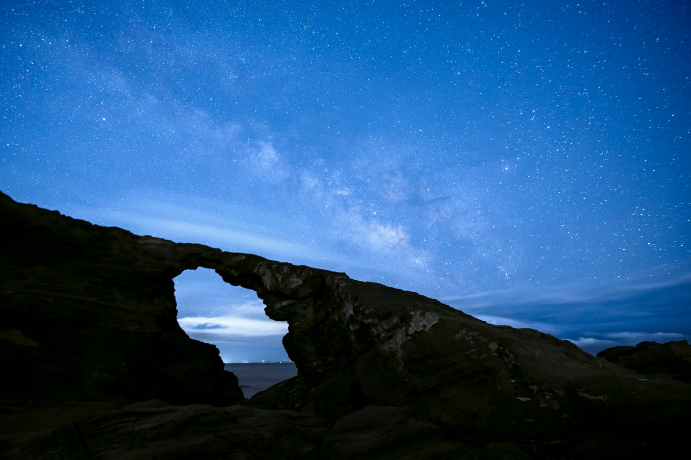

天の川は撮れる。
でも、作品にならない。
機材も揃えた。撮影地にも行った。YouTubeで学んだ。
それでも「なんか違う」と感じているなら、
それは技術の問題ではないかもしれません。

あなたはこんな状況ではないですか？
- 天の川は写るが、弱くてぼんやりしている
- 光害が気になって、撮影地が限られる
- SNSに投稿しても反応が少ない
- 同じ場所に行っても、毎回同じような写真になる
- 比較明合成を試みたが、うまくいかない
- 現像で何をすればいいかわからず、迷うまま終わる
- 撮れているけど、「作品」という感じがしない
これらは、星景写真を始めて1〜3年のあいだに多くの人が感じる悩みです。
機材のせいでも、撮影地のせいでもありません。
「撮れる」と「作品になる」は、まったく別のことです。
なぜ「撮れる」のに「作品にならない」のか
星景写真の上達で多くの人が詰まる場所は、技術の習得ではなく「判断」の欠如です。
たとえば、天の川の現像。RAWから現像するとき、どこまで持ち上げればいいのか。露光量・ホワイトバランス・カラーグレーディング——正解がわからないまま、感覚で触っている。
比較明合成も同じです。何枚撮ればいいのか、インターバルはどう設定するのか、飛行機の軌跡はどう対処するのか。個々の操作はわかっても、「なぜそうするのか」という判断基準が身についていない。
結果、毎回の撮影が「試行錯誤」で終わり、再現性がない。同じ場所に行っても同じ写真になるのは、環境のせいではなく、自分の判断が確立されていないからです。
写真の上達には「操作を覚える」段階と「判断を身につける」段階があります。多くの独学者は前者で止まり、後者に進めないまま伸び悩みます。
本当に必要なこと
星景写真において「判断」とは何か。それは、
- この光量のとき、天の川をどこまで強調するか
- 光害の色かぶりを、どう補正するか・どう活かすか
- 比較明合成で、どのコマを残してどのコマを捨てるか
- 撮影地の条件から、当日の狙いをどう設定するか
- 自分の「表現したいもの」をどう写真に落とし込むか
これらは、YouTube動画ひとつで解決するものではありません。自分の写真に対してフィードバックを受け、繰り返すことで初めて身につく種類のことです。
独学の限界は、自分の写真の「何がいけないのか」が見えないことにあります。良し悪しの判断基準が自分の中だけにある状態では、それが正しいかどうかわからない。
実際に学べること
① 比較明合成・星の軌跡
星景写真には2つの表現があります。天の川のように「点として」星を写すものと、長時間露光や比較明合成で「軌跡として」星を写すものです。
比較明合成は、複数枚を合成して星の動きを軌跡として表現する手法です。何枚撮ればいいのか、インターバルはどう設定するのか、飛行機や人工衛星の軌跡を除くにはどうするのか——撮影から仕上げまでの判断プロセスを学びます。
② 天の川現像・強調
「撮れているはずなのに天の川が出ない」——これはRAW現像の判断の問題です。露光量・ホワイトバランス・カラーグレーディングをどこまでどう調整するのか。光害の色をどう扱うのかを、実際のRAWデータで学びます。
- 比較明合成の撮影設計（枚数・インターバル・構図）
- 星の軌跡仕上げ——軌跡を活かした現像の考え方
- 天の川現像——RAWから天の川を引き出すための現像判断
- 光害補正とカラーグレーディングの考え方
- 飛行機・人工衛星の軌跡への対処方法
- 月・流星群・特殊な条件での撮影応用
- 自分の写真を作品として成立させるための仕上げ思考
月4回まで自分の撮影作品を提出し、講師から具体的な判定とアドバイスを受けられます。「なぜこの写真がうまくいかないのか」を言語化してもらえることで、次の撮影が変わります。
受講後に変わること
撮影に目的が生まれる
「今日はこれを試す」という判断軸ができ、撮影地に行くたびに成長が実感できる。
現像で迷わなくなる
「何を」「どこまで」やるかの基準が身につき、後処理がシンプルになる。
同じ場所でも違う写真が撮れる
光と条件の読み方が変わり、同じ撮影地でも毎回異なる作品になる。
「作品」と「記録」の違いがわかる
何が人の心に届くのかの感覚が育ち、SNSの反応も変わってくる。
写真実践塾 星景講座
プロカメラマン・村田一朗が主宰する実践型の星景写真講座です。
講義動画での学習と、月4回までの作品添削がセットになっています。
「撮り方を知る」だけでなく、「判断力を身につける」ことを目的にしています。